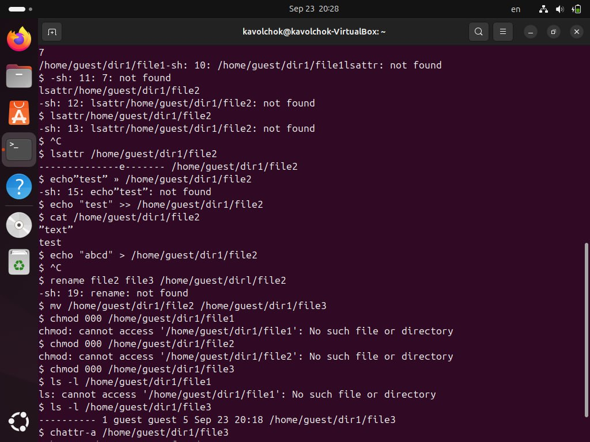

Получение практических навыков работы в консоли с расширенными атрибутами файлов.
Здесь приводится описание задания в соответствии с рекомендациями методического пособия и выданным вариантом.
В UNIX-системах, кроме стандартных прав доступа, существуют также дополнительные или специальные атрибуты файлов, которые поддерживает файловая система. Управлять атрибутами можно с помощью команды “chattr”.
Виды расширенных атрибутов:
От имени пользователя guest определила расширенные
атрибуты файла /home/guest/dir1/file1 командой
lsattr /home/guest/dir1/file1. Командой
chmod 600 /home/guest/dir1/file1 установила права,
разрешающие чтение и запись для владельца файла. При попытке
использовать команду chattr +a /home/guest/dir1/file1 для
установления расширенного атрибута “a” получила отказ в выполнении
операции.
От имени суперпользователя установила расширенный атрибут “a” на файл
командой sudo chattr +a /home/guest/dir1/file1 и от имени
пользователя guest проверила правильность установления атрибута командой
lsattr /home/guest/dir1/file1.
Дозаписала в файл file1 слово “test” командой
echo "test" >> /home/guest/dir1/file1, и, используя
команду cat /home/guest/dir1/file1, убедилась, что
указанное ранее слово было успешно записано в файл. Аналогично записала
в файл слово “abcd”. Далее попробовала стереть имеющуюся в файле
информацию командой
echo "abcd" > /home/guest/dir1/file1, но получила отказ.
Попробовала переименовать файл командой
rename file1 file2 /home/guest/dir1/file1 и изменить права
доступа командой chmod 000 /home/guest/dir1/file1 — и также
получила отказ.
 {#fig:003 width=70%}
Сняла расширенный атрибут “a” с файла от имени суперпользователя
командой sudo chattr -a /home/guest/dir1/file1 и повторила
операции, которые ранее не получилось выполнить — теперь ошибок не было,
и операции были выполнены.
От имени суперпользователя командой
sudo chattr +i /home/guest/dir1/file1 установила
расширенный атрибут “i” и повторила действия, которые выполняла ранее. В
данном случае файл можно было только прочитать, а изменить или записать
в него что-то, переименовать и изменить его атрибуты было
невозможно.
В ходе выполнения данной лабораторной работы я получила практические навыки работы в консоли с расширенными атрибутами файлов, на практике опробовала действие расширенных атрибутов “a” и “i”.